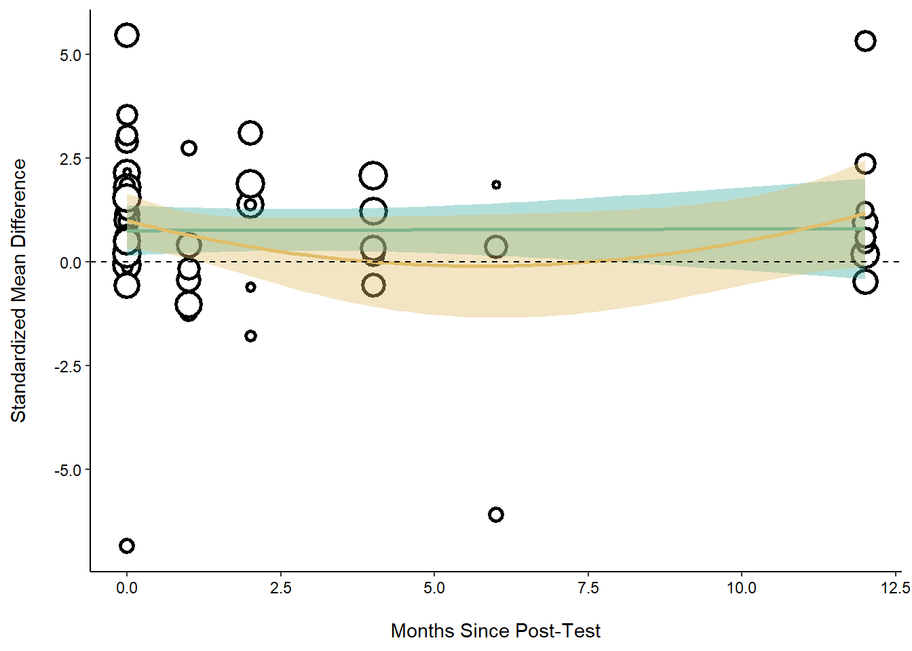

Testing for Quadratic Effects in Multilevel Meta-Analysis
Multilevel Meta-Analysis
R
Quadratic Effects
Organizational Training
Engagement
Data Science
Author
Matthew Swanson
Project Goal
As described in the overall goal of this project, the hospital is interested in understanding what the effect they could reasonably expect to have when implementing a new teamwork training course into their workforce. Using data from previously published literature, 30 studies were identified across ten research papers. Each of these studies evaluated participant teamwork skills prior to the implementation of the training, right after the training, and several months later. I have previously demonstrated how to find the overall effect for a comparison of pre to post scores and the overall effect comparing pre to follow-up scores. However, what about a model that considers the three time points in each study? It is reasonable to expect that teamwork scores will increase right after training (as compared to pre scores) and then plateau or even weaken over time (but still remain significantly greater than pre scores). To test for this, we will have to change the shape of the data a bit and add in a quadratic term. First, I will load in the data.
For the sake of this example, I am going to recalculate Hedges’ g for each of these comparisons in order to demonstrate again how to calculate meta-analytic effects using a dataset that has a slightly different set up than I have shown previously. I will also need to create the quadratic term by multiplying the number of months since the post test by itself.
# set correlation = .5ri <- .5QuadData$ri <- ri#compute effect size for pre vs. postQuadDataPP <-escalc(measure ="SMCR", m1i= Mean_pre, m2i = Mean_post,sd1i = SD1, sd2i = SD2, ni = N,ri = ri,flip =TRUE,data = QuadData)#compute effect size for pre vs. followQuadDataPF <-escalc(measure ="SMCR", m1i= Mean_pre, m2i = Mean_follow,sd1i = SD1, sd2i = SD3, ni = N,ri = ri,flip =TRUE,data = QuadData)QuadFull <-merge(QuadDataPP, QuadDataPF, by =c('Study_ID', 'Effect_ID'), all.x =TRUE)QuadFull <-unite(QuadFull, yi, c(yi.x, yi.y), na.rm =TRUE)QuadFull <-unite(QuadFull, vi, c(vi.x, vi.y), na.rm =TRUE)QuadFull <-unite(QuadFull, N, c(N.x), na.rm =TRUE)QuadFull <-unite(QuadFull, Months_since_post, c(Months_since_post.x), na.rm =TRUE)QuadFull <- QuadFull %>%mutate_at(c('yi', 'vi', 'N', 'Months_since_post'), as.numeric)#Create quadratic termQuadFull <- QuadFull %>%mutate(Quad_Term = Months_since_post * Months_since_post)QuadFull <- QuadFull |>mutate(df = N -1)#compute standard error for Cohen's d using sampling varianceQuadFull <- QuadFull |>mutate(std_error_d =sqrt(vi / N))#convert Cohen's d to Hedges' g: effect size & standard error & variance##correction factor JQuadFull <- QuadFull |>mutate(j =1- (3/ (4* df -1)))##Hedges' g: effect sizeQuadFull <- QuadFull |>mutate(hedges_g = yi * j)##Hedges' g: std errorQuadFull <- QuadFull |>mutate(std_error_g = std_error_d * j)#Hedges' g: variance QuadFull <- QuadFull |>mutate(var_g = vi * j) head(QuadFull)
Study_ID Effect_ID Mod1.x Months_since_post N Mean_pre.x Mean_post.x
1 1 1 1 0 306 3.50 5.86
2 1 2 1 2 306 3.50 NA
3 1 3 2 0 248 2.71 5.79
4 1 4 2 6 248 2.71 NA
5 1 5 3 0 329 2.48 3.30
6 1 6 3 12 329 2.48 NA
Mean_follow.x SD1.x SD2.x SD3.x ri.x yi vi Mod1.y
1 NA 0.43 0.72 NA 0.5 5.4748632 0.052245305 1
2 4.84 0.43 NA 1.19 0.5 3.1086088 0.019057922 1
3 NA 1.06 0.87 NA 0.5 2.8968271 0.020950821 2
4 3.10 1.06 NA 1.61 0.5 0.3668060 0.004303521 2
5 NA 0.71 1.40 NA 0.5 1.1522864 0.005057392 3
6 2.14 0.71 NA 0.88 0.5 -0.4777773 0.003386430 3
Months_since_post.y N.y Mean_pre.y Mean_post.y Mean_follow.y SD1.y SD2.y
1 0 306 3.50 5.86 NA 0.43 0.72
2 2 306 3.50 NA 4.84 0.43 NA
3 0 248 2.71 5.79 NA 1.06 0.87
4 6 248 2.71 NA 3.10 1.06 NA
5 0 329 2.48 3.30 NA 0.71 1.40
6 12 329 2.48 NA 2.14 0.71 NA
SD3.y ri.y Quad_Term df std_error_d j hedges_g std_error_g
1 NA 0.5 0 305 0.013066610 0.9975390 5.4613894 0.013034452
2 1.19 0.5 4 305 0.007891818 0.9975390 3.1009584 0.007872396
3 NA 0.5 0 247 0.009191252 0.9969605 2.8880221 0.009163315
4 1.61 0.5 36 247 0.004165682 0.9969605 0.3656911 0.004153021
5 NA 0.5 0 328 0.003920716 0.9977117 1.1496496 0.003911744
6 0.88 0.5 144 328 0.003208286 0.9977117 -0.4766840 0.003200945
var_g
1 0.052116728
2 0.019011020
3 0.020887141
4 0.004290441
5 0.005045819
6 0.003378681
Plotting Linear and Quadratic Trends
I calculated Hedges’ g for each comparison of interest and ensured that each value is read into a single dataset by using the unite function. Of course I could clean this dataset further by removing more of the duplicate columns of data that are created by combining two data frames, but for now I will move on and build a MLMA model that includes the quadratic term. The I will also plot this model.
#figureggplot(QuadFull, aes(x=Months_since_post, y=hedges_g)) +geom_point(aes(size = N), color="black", shape=21, stroke =1.5, fill="white")+geom_smooth(show.legend= F, color="#40B0A6", method ="lm", formula = y~x, fill ="#40B0A6")+geom_smooth(show.legend= F, color="#E1BE6A", method ="lm", formula = y~poly(x,2), fill ="#E1BE6A")+geom_hline(yintercept =0, color ="black", linetype=2)+coord_cartesian((xlim =c(0, 12))) +theme_classic() +labs(y="Standardized Mean Difference", x="Months Since Post-Test") +theme(legend.position ="none",axis.title.x =element_text(margin =unit(c(5, 0, 0, 0), "mm")),axis.title.y =element_text(margin =unit(c(0, 5, 0, 0), "mm")),axis.text.x=element_text(colour="black"),axis.text.y=element_text(colour="black"))

Results of this analysis indicates that there was no significant linear (p = .070) or quadratic effect (p = .061) of training over time. In other words, the significant improvement in training outcomes from pre to post assessment time points (as standardized mean difference) did not continue to improve over time, nor did post and follow-up time points differ from each other (when compared to pre training scores) as the quadratic trend line was not significant.